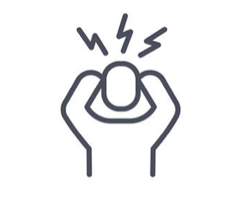
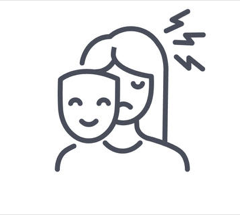
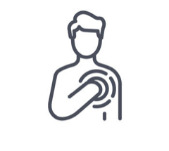
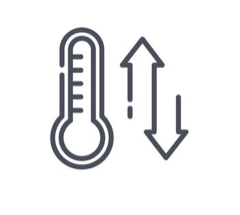
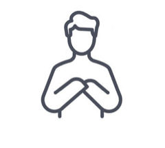
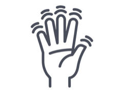
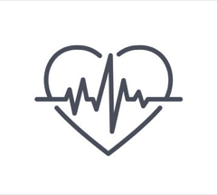

Services & Fees
Cognitive Behavioral Therapy
CBT is an evidence-based therapy that teaches you how your thoughts, feelings and behaviors are connected. Together, you and I will identify the unhelpful patterns that are holding you back. Then we’ll practice coping skills to help you move forward.
The tools I give you will be tailored to your specific needs, because what works for someone else might not work for you. It’s never easy work, but you get out what you put in. When you start to see the changes within yourself, you’ll know it was worth it.
If that all sounds super clinical, don’t worry. I am a real person who realizes you are also a real person, not a robot to be re-programmed. :::BEEP BOOP BEEP::: So if you’re just not feeling it that day, we can simply chat, or enjoy the quiet, over a game or art project.
Services

Anxiety
Learn about the fight-flight-freeze response and how to make your amygdala chill.
Depression
It’s more than just feeling sad. Learn the signs and how to cope.
ADHD
You’re not dumb. Your brain works differently. Learn how to level the playing field.

Trauma
Your experiences don’t have to define you. Learn how to work through the pain of the past.

Self-Esteem
Challenge negative thoughts about yourself and learn how to practice positive self-talk.

Emotion Regulation
What you say and do impacts your relationships. Learn how to stay cool and in control.

Effective Communication
You deserve to be heard. Learn about tone, timing and how to tailor your message to your audience.

Assertiveness
Tired of being overlooked or dismissed? Learn to ask for what you want with confidence.

Other Concerns
Your problems are not one-size-fits-all. Schedule a free 15-minute consultation to see how I can help.
Session Fees
$160 per 50-minute session
Free 15-minute phone consultation for prospective clients
I am not currently paneled with any insurance companies. However, most insurance companies will reimburse a percentage of out-of-network visits. I can provide monthly superbills for this purpose upon request.